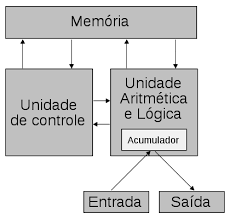

O modelo: O nome refere-se ao matemático John Von Neumann, que foi considerado o criador dos computadores da forma como são projetados até hoje. A ideia do modelo surgiu da necessidade de armazenar programas em um computador, pois, até então, ainda não haviam formas de armazenamento de programas em um computador. Von Neumann e outros pesquisadores descobriram que, utilizando dispositivos de memória em formas de linha de retardo de mercúrio, poderiam armazenar instruções de programas.
A proposta inicial de um computador de programa armazenado, denominado IAS (Princeton Institute for Advanced Studies), relatada pelo próprio von Neumann era:
* Primeira Parte Específica - Central Arithmetic ou CA: O dispositivo deve realizar as operações elementares da aritmética mais frequentemente, e por este motivo, deve ter unidades especializadas apenas para essas operações;
* Segunda Parte Específica - Control Center ou CC: A sequenciação apropriada das operações pode ser executado, de forma mais eficiente, por um controle central;
* Terceira Parte Específica - Memória ou M: Qualquer dispositivo que tiver que executar longas e complicadas sequencias de operações precisa ter uma memória considerável. * Recording ou R: Deve ser capaz de manter contato de entrada e saída, que são os neuronios correspondentes sensoriais e motores do cérebro humano.
* Quarta Parte Específica - Input I: é necessário ter unidades para transferencia de informações de R para M.
* Quinta Parte Específica - Output O: é necessário ter unidades para transferencia de informações de M para R.Ir para o topo
A Arquitetura de von Neuman: de John von Neumann (pronunciado Nóimann) - é uma arquitetura de computador que se caracteriza pela possibilidade de uma máquina digital armazenar seus programas no mesmo espaço de memória que os dados, podendo assim manipular tais programas. Esta arquitetura é um projeto modelo de um computador digital de programa armazenado que utiliza uma unidade de processamento (CPU) e uma de armazenamento ("memória") para comportar, respectivamente, instruções e dados.
A máquina proposta por Von Neumann reúne os seguintes componentes: (i) uma memória, (ii) uma unidade aritmética e lógica (ALU), (iii) uma unidade central de processamento (CPU), composta por diversos registradores, e (iv) uma Unidade de Controle (CU), cuja função é a mesma da tabela de controle da Máquina de Turing universal: buscar um programa na memória, instrução por instrução, e executá-lo sobre os dados de entrada.
Todos os elementos dessa arquitetura são alinhados da estrutura hardware do CPU, assim o sistema pode realizar todas as suas atividades sem apresentar erros no desempenho. Von Neumann é continuamente influenciado pela evolução tecnológica, tendo peças mais modernas inseridas. Cada um dos elementos apresentados é realizado à custa de componentes físicos independentes, cuja implementação tem variado ao longo do tempo, consoante a evolução das tecnologias de fabricação, desde os relés electromagnéticos, os tubos de vácuo (ou válvulas), até aos semicondutores, abrangendo os transistores e os circuitos eletrônicos integrados, com média, alta ou muito alta densidade de integração (MSI - medium scale, LSI - large scale, ou VLSI - very large scale integration), medida em termos de milhões transistores por pastilha de silício.
O modelo (ou arquitetura) de Von Neumann foi concebido a partir de 1946, quando John von Neumann e sua equipe desenvolveram um novo projeto de “computador de programa armazenado”. Projetado pela IAS (Princeton Institute for Advanced Studies), este computador foi largamente difundido, influenciando muitos projetos subsequentes de outras máquinas, sendo usado até hoje o sistema binário.Ir para o topo